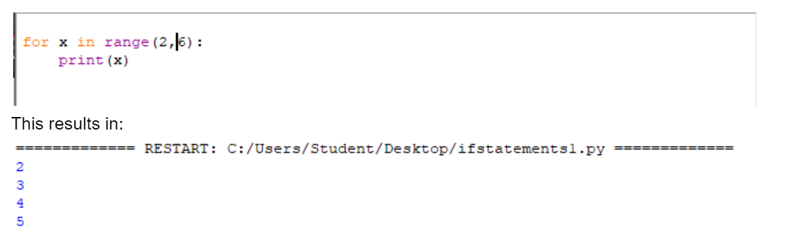

Previous
Next
For Loops
Introduction
For Loops are a way of iterating through a set/sequence of items. This can be letters in a string, a range of numbers, and more that will be covered better in the Advanced section of this tutorial.
Basic For Loop
The syntax for a for loop consists of “for a in b”. “a” is essentially a new variable that you can reference inside your for loop that's incremented with each loop. Essentially it tells you what iteration in the loop you are. Depending on the data you're working with in “b” its usually either a number or a string. For example check out the code below.
This simple piece of code takes a string variable called myString and then iterates through each letter of the string. This is easy with python since it automatically recognises the string in the for loop and assumes you’re gonna want to iterate through each letter. In each iteration the program prints the letter. This is because the for loop repeats the code inside the loop for each value inside the second argument, in this case myString. For example if you changed the value of myString to a longer word the loop would still output every character from that string. Give it a go. Your output should look something like this.
Range
Something you’ll end up using frequently with for loops in python is a function called the range() function. The range function is placed in the “b” section of the for loop and allows you to specify a range of numbers you want to iterate or “loop” through. For example the code for x in range(6) iterates through 0 to 5 since it stops before the number you specify. You can also specify a specific starting number by separating it and then last number with a comma. This is shown in the code below:

Python also has something called Break Statements. These allow you to exit the loop once a specific criteria is met by combining it with an if statement. This is presented below.
This ends the loop once x is equal to 4. Obviously this isn’t a practical use of this application but once we get more in depth break statements become a very useful tool.
You can also add a third argument to the range function that allows you to change what rate the for loop increments. This means instead of iterating through every number in the range you can just loop through every second number, or every fifth number. It's also possible to nest for loops just like we nested if statements inside each other. Both of these applications are presented in the below example.

This may seem complicated but if you study and test the loop for yourself you should understand it. It start by looping through the numbers 1 to 30 in increments of 5, but then nested inside each increment outputs the value the parent loop is currently on, plus the next 4 values. This in the end prints every value from 1 to 30. Again not the most useful application but its an important concept to understand.